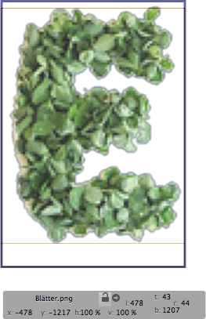

This shall get you started with making PhotoFonts.
PhotoFonts are a collection of bitmap images that use RGB color and alpha transparency. But this collection is “intelligent”, it works like a font, so you can press a key and get a certain image from the collection. Read more..
You can place all letters in one big image or use a image for each.
Set the resolution to 72 dpi. Save images as .png.
Measure the pixel height of the letters. Set the Ascender and Descender (in the Master section) to the values you measured from the images.
Set the UPM Value (in the Font section) to something like Ascender + Descender
Set the font name (in the Font section) and the style name (in the Instances section)
Open the letter in edit mode.
From Layer menu select Add Image or drag the image to the edit view.
Move the image that the letter sits inside the bounding box.
If you have a image with more then one letter, right click the image and select "Set Crop to Layer Bounds".
Change crop values with the four fields on the right side of the Inspector.
You can do the spacing and kerning like you would do with any other font
Export the font as .phf